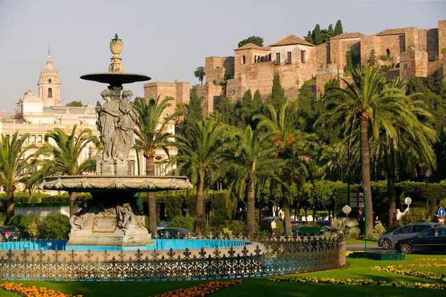

Málaga
Málaga. A great city.
More than 3,000 years of history have passed since Málaga's establishment by the Phoenicians up to achieving the beautiful, friendly and cosmopolitan city that enchants tourists from all over the world today.
The Roman Theatre and garum (Roman fish paste) pools will take you to the times of Roman Hispania. Meanwhile, the Alcazaba is the most beautiful living example of the period of Muslim domination. Experience the reconquest (La Reconquista) by the Catholic Monarchs from the Santuario de la Victoria (the Shrine of Victory). Or stroll along Calle San Agustín, formerly known as the Calle de los Caballeros, the street of the knights since they settled on this street, with the Palacio de Buenavista as its most significant feature.
Discover the glorious past of our grapes in the wine museum. Discover how the Los Alemanes (The Germans) bridge got its name. Visit the Cathedral and see real works of art, some holly, which have survived to this day in celebrations such as the Semana Santa de Málaga (Holy Week Fiestas).
Stroll down Málaga's main street and learn more about the Marqués de Larios. Arrive at the Plaza de la Constitución, where most of the city's social events are held. Admire buildings of different ages and be enthralled by the stories that the city can tell.
More information here